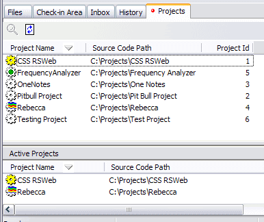

In the Projects Tab you can see the list of all the projects on your machine.

You can navigate between projects simply by double-clicking them. Notice that projects with unprocessed incoming scripts are marked with a colorful wave. Similarly, the icons of projects with files checked out are yellow.
The tab itself is marked with a red dot if there are waiting scripts in any of the projects. A green dot signifies the project that you have open currently. No dot means that the project doesn't require any action from the user.
The Details pane at the bottom of the Projects tab shows the currently active and recently visited projects and their status.